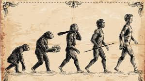

L'Évolution des singes
les singes existe depuis environs 58 millions d'années
L'évolution des singes
- La première apparition des singes sur terre a été la Super famille des Hominoides (Grands singes)
- Ensuite, il y a eu la famille des Hominoidés
- Puis la sous famille des Homininés
Ensuite sont arrivés les :
- Homo Sapiens
- Australopithèques
- Gorillinés
